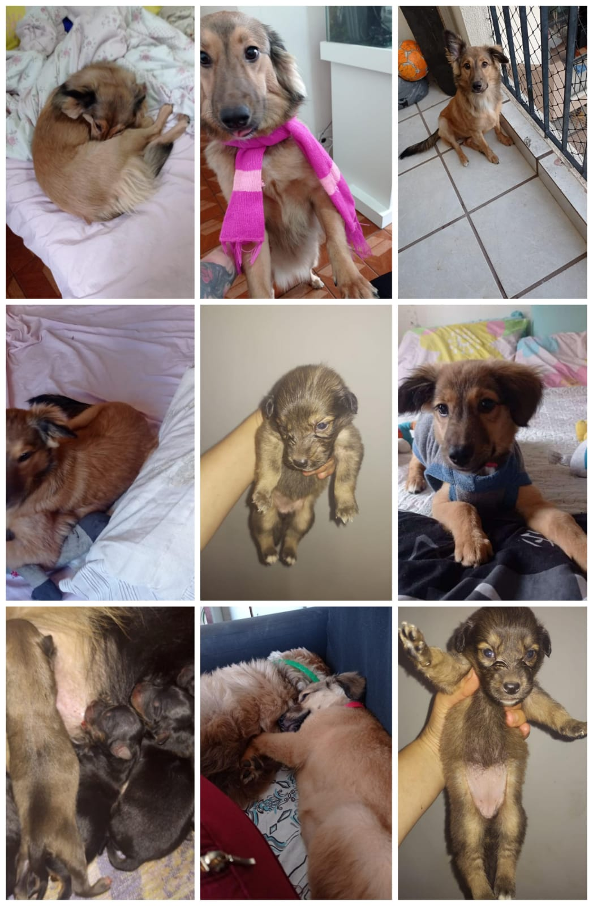

Lola, bebezinha sem raça definida, com idade de 1 ano e 9 meses, é a filha mais nova da família!
Desde pequena, ela sempre foi a maior da ninhada e um tanto desajeitada. Chegou em nossa casa com a barriga gigaaante porque não deixava seus irmãos se alimentarem direito (com o tempo e os comandos certos ela foi largando esse comportamento ).
A Lola tinha de tudo para crescer uma cachorra territorialista, mas, ao longo dos meses se mostrou o completo oposto disso!
Outra curiosidade sobre a adoção dela é que a pegamos no dia 25 de dezembro (natal) e que desde o primeiro dia ela se comportou super bem, sem demonstrar comportamentos agressivos, ansiosos e estranhamento com o novo ambiente.
Por ter vindo de uma família com pai e mãe conhecidos, temos informações sobre a Lola desde de o dia de seu nascimento até o dia da adoção, como, por exemplo, raça do pai e da mãe, data de nascimento, possível porte, comportamento, entre outros. Como já dito antes, a Lola não demonstra nenhum tipo de comportamento territorialista e/ou agressivo, e desde que chegou foi adaptada a outros animais e crianças. Além disso, foi ensinado a ela alguns comandos nos quais ela não demonstrou dificuldade em aprender e, atualmente, já sabe esperar, sentar, dar a patinha, conhece também onde é o seu "banheiro" e não chora ou late quando precisa ficar sozinha. Ela é, sem dúvidas, uma companheira muito divertida, amorosa e fiel.
